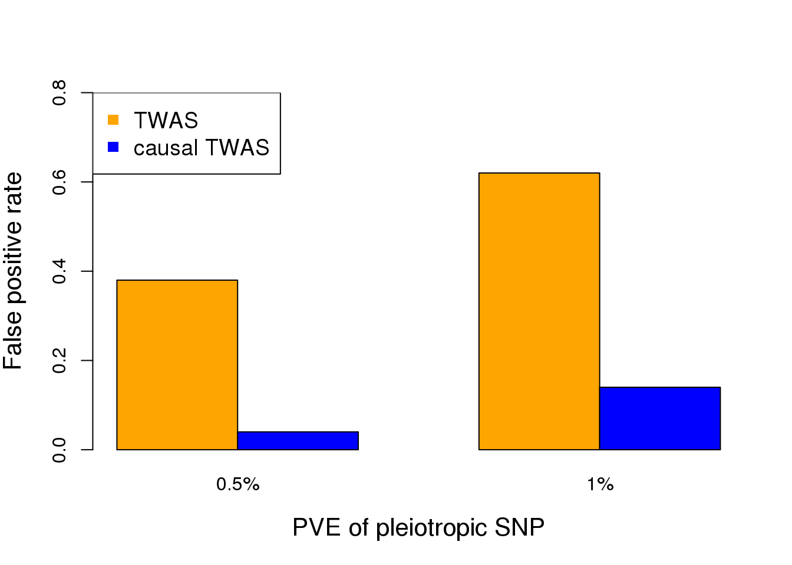
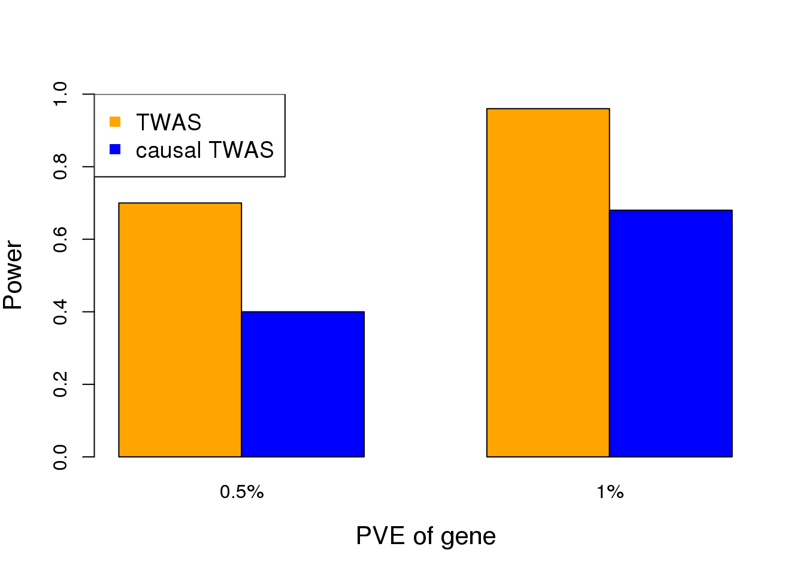

Last updated: 2019-11-03
Checks: 7 0
Knit directory: causal-TWAS/
This reproducible R Markdown analysis was created with workflowr (version 1.4.0). The Checks tab describes the reproducibility checks that were applied when the results were created. The Past versions tab lists the development history.
Great! Since the R Markdown file has been committed to the Git repository, you know the exact version of the code that produced these results.
Great job! The global environment was empty. Objects defined in the global environment can affect the analysis in your R Markdown file in unknown ways. For reproduciblity it’s best to always run the code in an empty environment.
The command set.seed(20191103) was run prior to running the code in the R Markdown file. Setting a seed ensures that any results that rely on randomness, e.g. subsampling or permutations, are reproducible.
Great job! Recording the operating system, R version, and package versions is critical for reproducibility.
Nice! There were no cached chunks for this analysis, so you can be confident that you successfully produced the results during this run.
Great job! Using relative paths to the files within your workflowr project makes it easier to run your code on other machines.
Great! You are using Git for version control. Tracking code development and connecting the code version to the results is critical for reproducibility. The version displayed above was the version of the Git repository at the time these results were generated.
Note that you need to be careful to ensure that all relevant files for the analysis have been committed to Git prior to generating the results (you can use wflow_publish or wflow_git_commit). workflowr only checks the R Markdown file, but you know if there are other scripts or data files that it depends on. Below is the status of the Git repository when the results were generated:
Ignored files:
Ignored: .Rproj.user/
Ignored: data/
Unstaged changes:
Modified: analysis/_site.yml
Note that any generated files, e.g. HTML, png, CSS, etc., are not included in this status report because it is ok for generated content to have uncommitted changes.
These are the previous versions of the R Markdown and HTML files. If you’ve configured a remote Git repository (see ?wflow_git_remote), click on the hyperlinks in the table below to view them.
| File | Version | Author | Date | Message |
|---|---|---|---|---|
| Rmd | 68e228f | simingz | 2019-11-03 | model and Xin’s simulation |
| html | 68e228f | simingz | 2019-11-03 | model and Xin’s simulation |
We performed simulations todemonstrate the importance of accounting for pleiotropic effects ofSNPs when performing TWAS. We take real genotype data of aregion near GNL3 (a top gene in a TWAS of SCZ) from WTCCC(n= 3,000). We first simulate expression data of the gene inthe region, assuming two independent cis-eQTLs with total cis-heritability of 30%. We next simulate phenotype data under twosettings: (1) the gene has no causal effect, but one of the eQTLsacts on the phenotype (through other mechanism); (2) the genehas a causal effect, and no other SNPs in the region affect the phenotype. We compare TWAS (using Lassoas expression models) with a simple “causal TWAS” method, which performs multiple regression of phenotypeagainst all SNPs in the region plus the predicted gene expression. We use SuSiE, a Bayesian variable selectionmethod for regression. For TWAS, we use a stringentp-value threshold of 0.001 (note that we are testing a singlegene). Since SuSie does not report p-values, we call the gene effect significant if it is found in the “credible set”.In the first setting (gene has no causal effect), we found the false positive (FP) rates of TWAS are muchhigher than the causal TWAS method (Figure 3A). This is because under this model, the association of geneexpression with trait is explained away by the causal SNP. In the second setting (gene has causal effect), whileTWAS has high power as expected, the causal TWAS method also achieves appreciable power (Figure 3B).These simulations thus demonstrate the feasibility of controlling FP rates while maintaining power. We believethe full EB framework outlined below will help close the gap of power. Additionally, in our simulations, we benefitfrom the fact that the gene has two independent eQTL signals. In reality, EB approach would be critical for thesituation where a gene has single eQTL signal.
library(MASS)
library(susieR)
library(glmnet)Loading required package: MatrixLoading required package: foreachLoaded glmnet 2.0-16# read genotype data
file <- "data/genotype_GNL3.Rdata"
load(file)
G <- scale(mydata)
N <- nrow(G)
M <- ncol(G)
# Simulation function
# G: genotype matrix. h2.eQTL: h2 of eQTL. n.eQTL: number of eQTL SNPs. gamma: effect size of gene. theta: effect size of SNP.
simulate <- function(G, h2.eQTL, n.eQTL, gamma, theta) {
N <- dim(G)[1]
M <- dim(G)[2]
idx.eQTL <- sample(1:M, n.eQTL)
alpha <- rep(sqrt(h2.eQTL/n.eQTL), n.eQTL)
# simulate gene expression data
X <- G[, idx.eQTL] %*% alpha + rnorm(N, sd=1)
# simulate phenotype data
idx.SNP <- idx.eQTL[1] # choose a SNP that is one eQTL
Y <- X * gamma + as.matrix(G[, idx.SNP]) %*% theta + rnorm(N)
# return results
return (list(X=X, Y=Y, idx.eQTL=idx.eQTL, idx.SNP))
}
# Evaluation function
evaluate <- function(G, X, Y) {
# predicted expression
cvfit <- cv.glmnet(G, X)
X.tilde <- predict(cvfit, G, s = "lambda.min")
# TWAS
fit <- lm(Y ~ X.tilde)
pvalue <- summary(fit)$coefficients["X.tilde",4]
# causal-TWAS
res <- susie(cbind(G, X.tilde), Y, L=1)
gene.indicator <- (M+1) %in% res$sets$cs$L1
# return results
return (list(twas.pvalue=pvalue, causal.twas.gene=gene.indicator))
}
# Compare TWAS vs. causal-TWAS
h2.eQTL <- 0.3
nsims <- 50
# false positive simulation
gamma <- 0.0
theta <- 0.07
n.eQTL <- 2
twas.pvalue <- array(nsims)
causal.twas.gene <- array(nsims)
for (i in 1:nsims) {
data <- simulate(G, h2.eQTL, n.eQTL, gamma, theta)
result <- evaluate(G, data$X, data$Y)
twas.pvalue[i] <- result$twas.pvalue
causal.twas.gene[i] <- result$causal.twas.gene
}
cat("FP rate of TWAS = ", sum(twas.pvalue < 0.001)/nsims, "\n")FP rate of TWAS = 0.36 cat("FP rate of causal TWAS = ", sum(causal.twas.gene==TRUE)/nsims, "\n")FP rate of causal TWAS = 0.18 FP.low <- c(0.38, 0.04)
FP.high <- c(0.62, 0.14)
FP.rates <- cbind(FP.low, FP.high)
colors <- c("orange","blue")
barplot(FP.rates, col=colors, xlab="PVE of pleiotropic SNP", ylab="False positive rate", ylim=c(0,0.8), names.arg=c("0.5%", "1%"), beside=TRUE, cex.lab=1.3)
legend("topleft",c("TWAS","causal TWAS"),col=colors,pch=15, cex=1.2)
| Version | Author | Date |
|---|---|---|
| 68e228f | simingz | 2019-11-03 |
# power simulation
n.eQTL <- 2
gamma <- 0.18
theta <- 0
twas.pvalue <- array(nsims)
causal.twas.gene <- array(nsims)
for (i in 1:nsims) {
data <- simulate(G, h2.eQTL, n.eQTL, gamma, theta)
result <- evaluate(G, data$X, data$Y)
twas.pvalue[i] <- result$twas.pvalue
causal.twas.gene[i] <- result$causal.twas.gene
}
cat("Power of TWAS = ", sum(twas.pvalue < 0.001)/nsims, "\n")Power of TWAS = 0.94 cat("Power of causal TWAS = ", sum(causal.twas.gene==TRUE)/nsims, "\n")Power of causal TWAS = 0.78 # plot the results
power.low <- c(0.7, 0.4)
power.high <- c(0.96, 0.68)
TP.rates <- cbind(power.low, power.high)
colors <- c("orange","blue")
barplot(TP.rates, col=colors, xlab="PVE of gene", ylab="Power", ylim=c(0,1), names.arg=c("0.5%", "1%"), beside=TRUE, cex.lab=1.3)
legend("topleft",c("TWAS","causal TWAS"),col=colors,pch=15, cex=1.2)
| Version | Author | Date |
|---|---|---|
| 68e228f | simingz | 2019-11-03 |
sessionInfo()R version 3.5.1 (2018-07-02)
Platform: x86_64-pc-linux-gnu (64-bit)
Running under: Scientific Linux 7.4 (Nitrogen)
Matrix products: default
BLAS/LAPACK: /software/openblas-0.2.19-el7-x86_64/lib/libopenblas_haswellp-r0.2.19.so
locale:
[1] LC_CTYPE=en_US.UTF-8 LC_NUMERIC=C
[3] LC_TIME=en_US.UTF-8 LC_COLLATE=en_US.UTF-8
[5] LC_MONETARY=en_US.UTF-8 LC_MESSAGES=en_US.UTF-8
[7] LC_PAPER=en_US.UTF-8 LC_NAME=C
[9] LC_ADDRESS=C LC_TELEPHONE=C
[11] LC_MEASUREMENT=en_US.UTF-8 LC_IDENTIFICATION=C
attached base packages:
[1] stats graphics grDevices utils datasets methods base
other attached packages:
[1] glmnet_2.0-16 foreach_1.4.4 Matrix_1.2-15 susieR_0.8.0 MASS_7.3-51.1
loaded via a namespace (and not attached):
[1] Rcpp_1.0.0 knitr_1.20 whisker_0.3-2
[4] magrittr_1.5 workflowr_1.4.0 lattice_0.20-38
[7] stringr_1.4.0 tools_3.5.1 grid_3.5.1
[10] git2r_0.25.2 matrixStats_0.54.0 htmltools_0.3.6
[13] iterators_1.0.10 yaml_2.2.0 rprojroot_1.3-2
[16] digest_0.6.18 fs_1.3.1 codetools_0.2-15
[19] glue_1.3.0 evaluate_0.12 rmarkdown_1.10
[22] stringi_1.3.1 compiler_3.5.1 backports_1.1.2